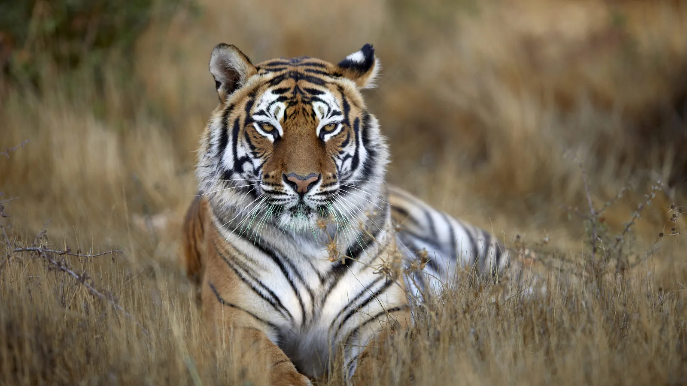

León
El león es conocido como el rey de la selva. Es un gran depredador que vive en manadas y es nativo de África. Los leones machos tienen una melena distintiva que los hace fácilmente reconocibles.

Curiosidades: Los leones pueden dormir hasta 20 horas al día debido a su naturaleza de cazadores nocturnos.
Elefante Africano
El elefante africano es el animal terrestre más grande del mundo. Conocido por su inteligencia y su memoria sobresaliente, los elefantes pueden vivir hasta 70 años en la naturaleza.

Curiosidades: Los elefantes pueden detectar agua a más de 16 km de distancia gracias a su excelente sentido del olfato.
Tigre
El tigre es un gran felino conocido por su agilidad, fuerza y sus hermosas rayas. Es el mayor de los felinos y uno de los cazadores más formidables de la naturaleza.

Curiosidades: Los tigres son solitarios y marcan su territorio con su orina.
Oso Polar
El oso polar es una de las especies más adaptadas al frío extremo. Se encuentra en el Ártico y está perfectamente diseñado para sobrevivir en temperaturas bajo cero gracias a su espeso pelaje y capa de grasa.

Curiosidades: Los osos polares pueden correr a velocidades de hasta 40 km/h, a pesar de su gran tamaño.